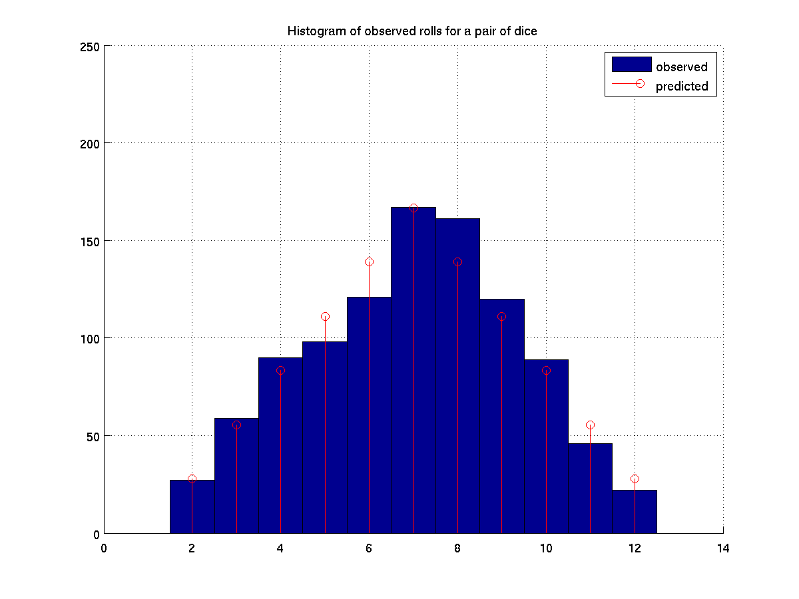

If you roll a pair of dice, their sum will be a number from 2 to 12.
But the resulting numbers are not equally likely. For example, you
are six times as likely to roll a score of 7 than a score of 2,
because there are six possible outcomes that add to 7
| outcome: | 2 | 3 | 4 | 5 | 6 | 7 | 8 | 9 | 10 | 11 | 12 |
|---|---|---|---|---|---|---|---|---|---|---|---|
| probability: | 1/36 | 2/36 | 3/36 | 4/36 | 5/36 | 6/36 | 5/36 | 4/36 | 3/36 | 2/36 | 1/36 |
Today, we will develop a program that performs an experiment by simulating N trials of rolling a pair of dice, and graphing a histogram of the outcomes versus the theoretical prediction. We will rely on MATLAB's existing hist function, for producing such a figure. As an example, here is a graph of 1000 random trials.

Our goal is to write a script dicepair.m that produces such a figure, assuming that variable N is predefined to be the number of trials. We will work on this as a group. After class, I will post a sample solution.